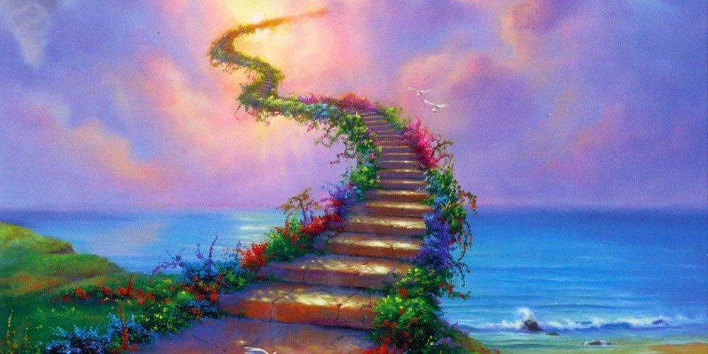
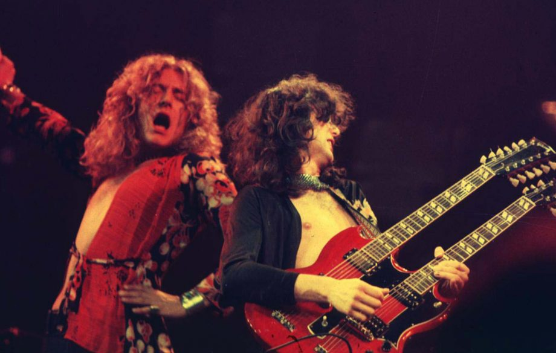

Stairway to Heaven è una delle canzoni più importanti e più belle nella storia della musica.
Occupa la 31esima posizione nelle 500 migliori canzoni secondo la rivista Rolling Stone.
La canzone può essere suddivisa in 4 principali sezioni, ciascuna della durata precisa di 2 minuti. La prima
sezione è composta da un popolarissimo riff di chitarra acustica accompagnata da dei flauti seguita dalla voce.
Gli accordi seguono con eventuali rivolti un basso che discende cromaticamente. Nella seconda sezione subentrano il
basso e le chitarre elettriche (non distorte). Nella precisa metà della canzone la velocità aumenta ed entra la
batteria. Il meraviglioso assolo di chitarra di Jimmy Page inizia a 6 minuti, con il ritmo molto più veloce rispetto
all'inizio. La canzone si conclude con gli acuti di Robert Plant e con un rallentando che porta alla conclusione a
cappella.
| Titolo | Stairway to Heaven |
|---|---|
| Artista | Led Zeppelin |
| Album | Singolo |
| Anno | 1971 |